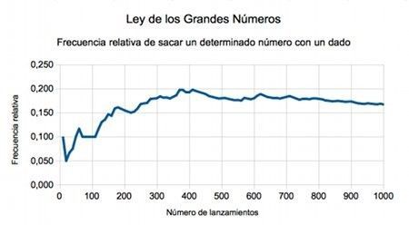
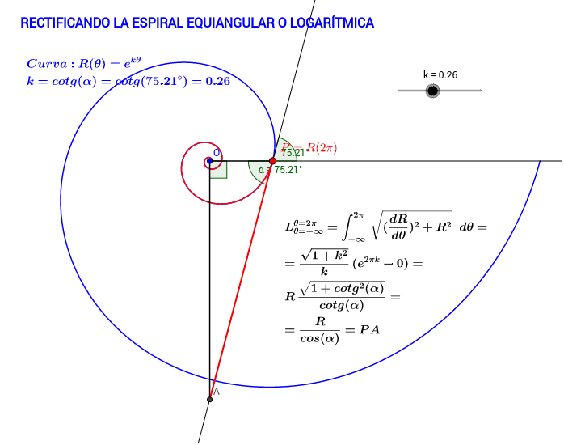

Jacob Bernoulli nació el 27 de diciembre de 1654 en Basilea, Suiza, en el seno de una familia dedicada al comercio. Fue el mayor de los hermanos Bernoulli y uno de los primeros grandes matemáticos de esta destacada familia.
Jacob fue uno de los primeros matemáticos en adoptar y desarrollar el cálculo diferencial e integral creado por Gottfried Wilhelm Leibniz. Sus trabajos ayudaron a expandir y aplicar el nuevo método matemático a problemas de geometría, mecánica y series infinitas. Fue profesor de matemáticas en la Universidad de Basilea, donde formó a varios estudiantes y colaboró (aunque también compitió) con su hermano menor Johann Bernoulli.
Una de sus contribuciones más importantes fue en el campo de la probabilidad. Su obra más influyente, Ars Conjectandi (publicada en 1713, después de su muerte), sentó las bases de la teoría moderna de la probabilidad. En este libro formuló la Ley de los Grandes Números, principio fundamental que explica cómo, al aumentar el número de repeticiones de un experimento aleatorio, los resultados tienden a estabilizarse alrededor de un valor esperado.
También realizó aportaciones importantes al estudio de las series, las curvas y los problemas variacionales. Entre las curvas que investigó se encuentra la espiral logarítmica, que admiraba profundamente y que pidió que fuera grabada en su tumba con la frase en latín “Eadem mutata resurgo” (“Aunque cambiada, resurjo siendo la misma”), reflejando su interés por las propiedades matemáticas y la idea de continuidad.
Jacob Bernoulli falleció el 16 de agosto de 1705 en Basilea, Suiza. Hoy es recordado como uno de los pioneros del cálculo y como uno de los fundadores de la teoría de la probabilidad, dejando una influencia duradera en el desarrollo de las matemáticas modernas.